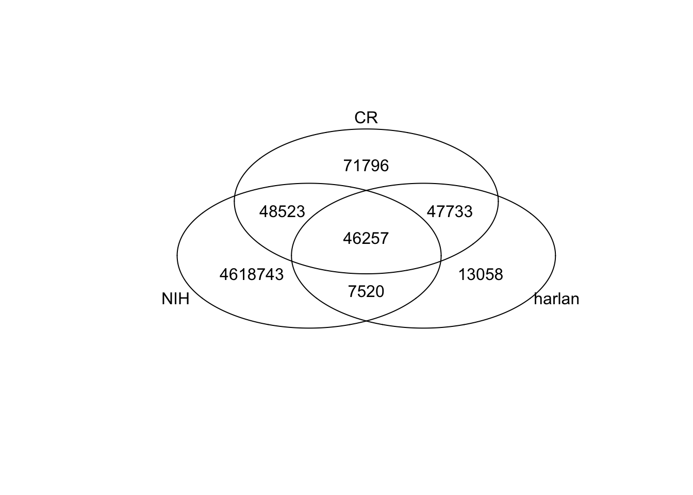
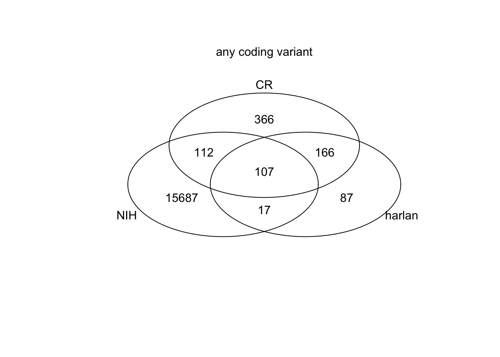
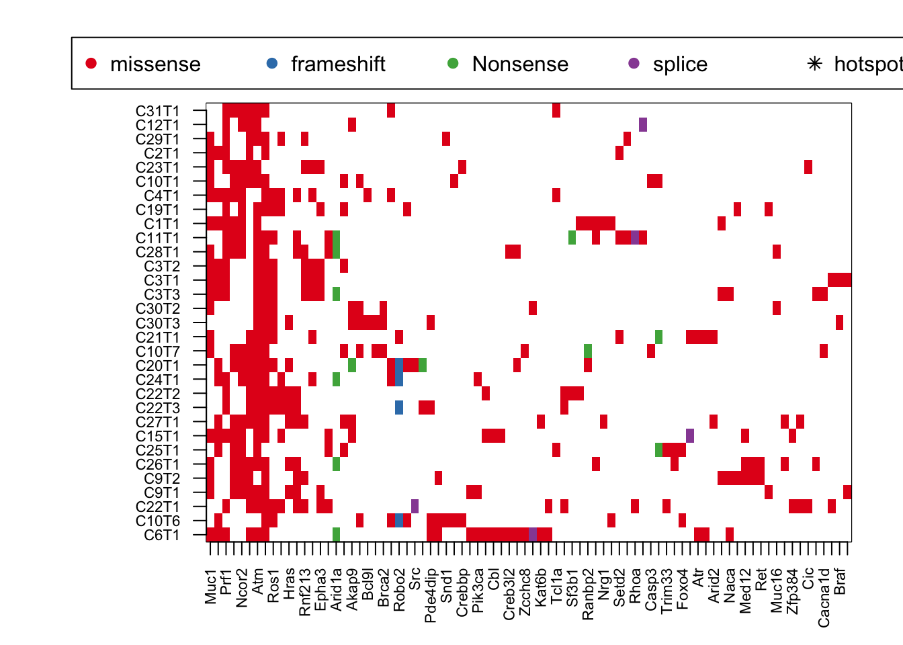
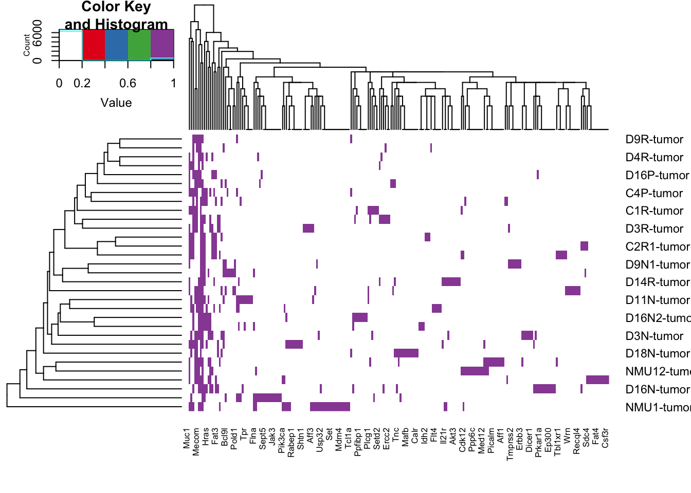
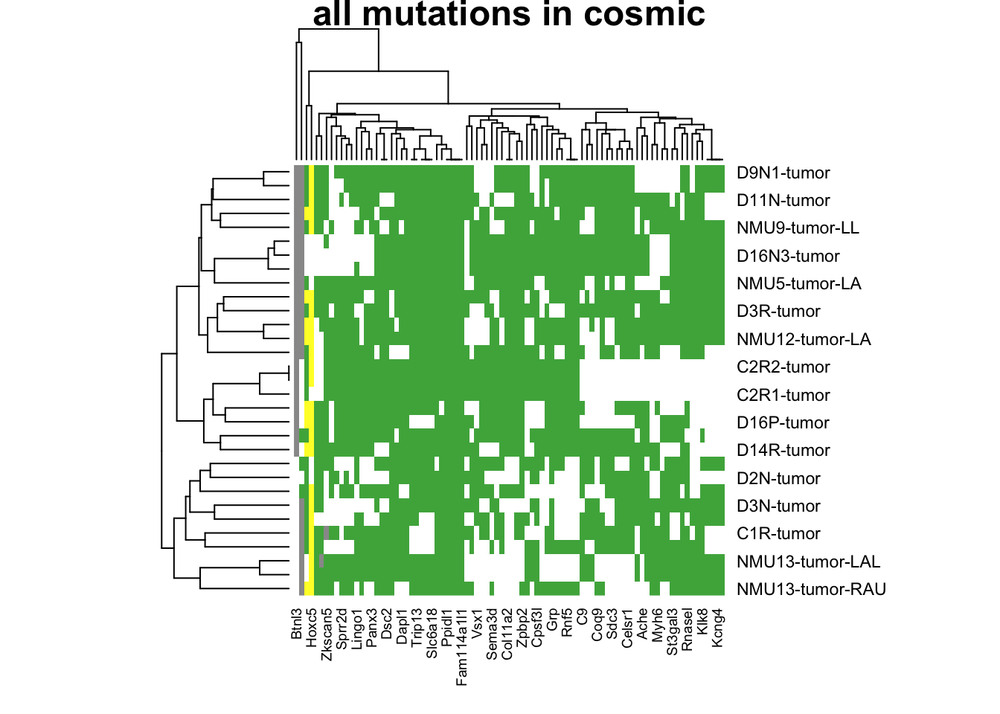
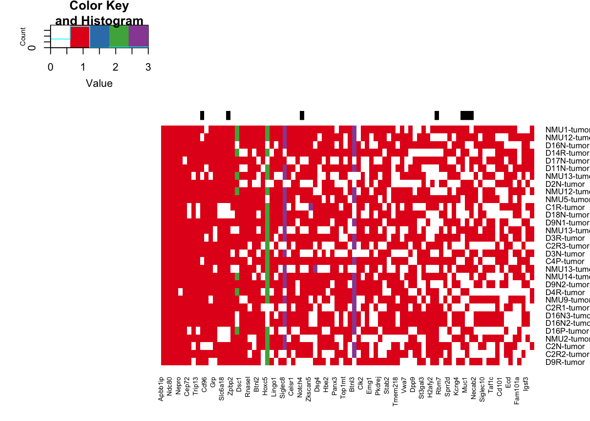

Chapter 21 Mutations in RNA
In this section, we will check RNA data for the common mutations identified in the previous section. Some of these mutations could be uncharacterised polymoprphisms, and if this is the case, we will see in both CD45 and Epithelial fractions
21.1 Haplotype caller
Mutational calling from RNA data was performed using haplotype caller. The key steps are:
- run haplotype caller
- run snpeff to annotate
- from snpsift to convert to a text file that can be read
Note that a dbSNP file is needed to filter for polymorphisms. We have used the harlan variants to perform filtering due to similarity in population frequencies in the previous section
An example of the code is shown here:
# pipeline
# 1. run haplotyper
# A. Assemble BAM files
Inputs:
$1 fastq file (if paired end, $2 will be the other)
$2 aligned bam
# fastq to unaligned BAM
java -jar $PICARD/picard-2.8.0.jar FastqToSam F1=$1 O=$uBAM\
## for paired end:
# java -jar $PICARD/picard-2.8.0.jar FastqToSam F1=$1 F2=$2 O=$uBAM \
# change read groups in aligned BAM file to ensure uniqueness
java -jar $PICARD/picard-2.8.0.jar AddOrReplaceReadGroups \
I= $2 \
O= "${2/.bam/ARG.bam}" \
ID=$baseName2 \
LB=library \
PL=illumina \
PU=hiseq2000 \
SM=$baseName2 \
CN=MFBC \
DT=2018-08-20T00:00:00-0400
# merge files
gatk MergeBamAlignment \
--REFERENCE_SEQUENCE ../Alignment/rn6.fa \
--UNMAPPED_BAM $uBAM \
--ALIGNED_BAM "${2/.bam/ARG.bam}" \
--OUTPUT $mBAM \
--INCLUDE_SECONDARY_ALIGNMENTS false \
--PAIRED_RUN true \
--VALIDATION_STRINGENCY SILENT
#B. Mark duplicates
gatk MarkDuplicates \
--INPUT $mBAM \
--OUTPUT $dBAM \
--CREATE_INDEX true \
--VALIDATION_STRINGENCY SILENT \
--METRICS_FILE ${outName}.metrics
#C. Split sigar reads
gatk SplitNCigarReads \
-R ../Alignment/rn6.fa \
-I $dBAM \
-O $cBAM \
#D. Base recalibration
gatk BaseRecalibrator \
-R ../Alignment/rn6.fa \
-I $cBAM \
-O ${outName}_recalibration \
-known-sites harlan_snps_mod_1-5-2020.SDsort.vcf.gz
gatk ApplyBQSR \
--add-output-sam-program-record \
-R ../Alignment/rn6.fa \
-I $cBAM \
--use-original-qualities \
-O $bBAM \
--bqsr-recal-file ${outName}_recalibration
#E. Haplotype calling
gatk HaplotypeCaller \
-R ../Alignment/rn6.fa \
-I $bBAM \
-L ../Alignment/rn6_refGene_intervals.bed \
-O ${outName}HCR.vcf.gz \
--dont-use-soft-clipped-bases true \
--standard-min-confidence-threshold-for-calling 20 \
--dbsnp all_rat_snps_0504.SD.vcf.gz
# F. Filtering
gatk VariantFiltration \
--R ../Alignment/rn6.fa \
--V ${outName}HCR.vcf.gz \
--window 35 \
--cluster 3 \
--filter-name "FS" \
--filter "FS > 30.0" \
--filter-name "QD" \
--filter "QD < 2.0" \
-O ${outName}_filt_HCR
# 2. run SnpEff to annotate
java -jar $SNPEFF/snpEff.jar -v Rnor_6.0.86 /n/scratch2/at268/carlos_data/20191030_Ep_NMU1_CGDA7428_S1_R1_001_filt > /n/scratch2/at268/carlos_data/20191030_Ep_NMU1_CGDA7428_S1_R1_001_filt_ann
# 3. run SnpSift to save as a .txt file that can be easily read
cat $f | $SNPEFF/scripts/vcfEffOnePerLine.pl | java -jar $SNPEFF/SnpSift.jar extractFields -e "" - CHROM POS ID REF ALT QUAL FILTER AF AC DP MQ "ANN[*].ANNOTATION" "ANN[*].GENE" "ANN[*].GENEID" "ANN[*].BIOTYPE" "ANN[*].HGVS_C" "ANN[*].HGVS_P" "ANN[*].CDNA_POS" "ANN[*].CDNA_LEN" "ANN[*].CDS_POS" "ANN[*].CDS_LEN" "ANN[*].AA_POS" "ANN[*].AA_LEN" "NMD[*].NUMTR" "NMD[*].PERC" "GEN[*]" > $ofileFrom processing the mutational information:
Header information - Genotypes: GT: genotype AD: Allelic depths for the ref and alt alleles in the order listed DP: Approximate read depth (reads with MQ=255 or with bad mates are filtered) GQ: Genotype Quality PL: Normalized, Phred-scaled likelihoods for genotypes
Header info: Info AC: Allele count in genotypes, for each ALT allele, in the same order as listed AF: Allele Frequency, for each ALT allele, in the same order as listed AN: Total number of alleles in called genotypes DB: dbSNP Membership DP: Approximate read depth; some reads may have been filtered ExcessHet: Phred-scaled p-value for exact test of excess heterozygosity FS: Phred-scaled p-value using Fisher’s exact test to detect strand bias MLEAC: Maximum likelihood expectation (MLE) for the allele counts (not necessarily the same as the AC) MLEAF: Maximum likelihood expectation (MLE) for the allele frequency (not necessarily the same as the AF) MQ: RMS Mapping Quality QD:Variant Confidence/Quality by Depth SOR: Symmetric Odds Ratio of 2x2 contingency table to detect strand bias
SnpEff Annotations: Allele : C Annotation: missense_variant Annotation_Impact MODERATE Gene_Name Raet1l Gene_ID ENSRNOG00000040300 Feature_Type transcript Feature_ID ENSRNOT00000062027.4 Transcript_BioType protein_coding HGVS.c c.1017C>G HGVS.p p.Cys339Trp cDNA.pos / cDNA.length 1017/1185 CDS.pos / CDS.length 1017/1185 AA.pos / AA.length 339/394
missense_variant|MODERATE|Raet1l|ENSRNOG00000040300|transcript|ENSRNOT00000062027.4|protein_coding|6/7|c.1017C>G|p.Cys339Trp|1017/1185|1017/1185|339/394||
AC=2;AF=1.00;AN=2;DP=49;ExcessHet=3.0103;FS=0.000;MLEAC=2;MLEAF=1.00;MQ=60.00;QD=34.99;SOR=0.874;ANN=GC|frameshift_variant&splice_region_variant|HIGH|Reps1|ENSRNOG00000059224|transcript|ENSRNOT00000089607.1|protein_coding|8/29|c.119dupC|p.Gln41fs|142/2608|120/1842|40/613||INFO_REALIGN_3_PRIME;LOF=(Reps1|ENSRNOG00000059224|2|0.50)
AC=2;AF=1.00;AN=2;BaseQRankSum=1.593;ClippingRankSum=0.000;DP=9;ExcessHet=3.0103;FS=0.000;MLEAC=2;MLEAF=1.00;MQ=60.00;MQRankSum=0.000;QD=33.20;ReadPosRankSum=0.765;SOR=1.609;ANN=AT|frameshift_variant&stop_gained|HIGH|Pacs1|ENSRNOG00000020350|transcript|ENSRNOT00000027632.5|protein_coding|3/24|c.464dupA|p.Tyr155fs|464/2886|464/2886|155/961||;LOF=(Pacs1|ENSRNOG00000020350|1|1.00);NMD=(Pacs1|ENSRNOG00000020350|1|1.00)
21.2 Load files
hfiles=dir("../data/haplotypeCaller/output_HaplotypeCaller_May/characterisation/",
pattern=".txt", full.names = T)
allHfiles=list()
allCodingHaplo=list()
allCosmicHaplo=list()
for (i in 1:length(hfiles)){
A1=read.delim(hfiles[i], sep="\t", stringsAsFactors = F)
A1[which(A1==(-1), arr.ind=T)]=""
cNames=sapply(strsplit(colnames(A1)[12:27], "\\.\\.\\.\\."), function(x) x[2])
cNames[13:16]=paste(c("LOF", "LOF", "NMD", "NMD"), cNames[13:16], sep=".")
colnames(A1)[12:28]=c(cNames, "GEN")
GEN2=sapply(strsplit(A1$GEN, ":"), function(x) x[2])
gRef=sapply(strsplit(GEN2, ","), function(x) x[1])
gAlt=sapply(strsplit(GEN2, ","), function(x) x[length(x)])
A1$n_ref=as.numeric(gRef)
A1$n_alt=as.numeric(gAlt)
A1$VAF=A1$n_alt/(A1$n_alt+A1$n_ref)
allHfiles[[i]]=A1[which(A1$n_ref+A1$n_alt>10), ]
allCodingHaplo[[i]]=A1[which(A1$HGVS_P!="" & A1$n_ref+A1$n_alt>10), ]
allCosmicHaplo[[i]]=A1[which(A1$GENE%in%RatCosmic & A1$n_ref+A1$n_alt>10), ]
}
## names of the files
fNam=unlist(strsplit(hfiles, "_filt_HCR_ann_siftB.txt")) #remove HCR where not needed
fNam=unlist(strsplit(fNam, ".vcf.g"))
fNam2=paste(fNam, ".fastq.gz", sep="")
fNam2=sapply(strsplit(fNam2, "/"), function(x) x[length(x)])
idx1=infoTableFinal$SampleID[match(fNam2, infoTableFinal$FqFile)]
idx1[which(is.na(idx1))]=fNam2[which(is.na(idx1))]
idx1[grep("CD45plus", idx1)]=substr(idx1[grep("CD45plus", idx1)],10, 21)
# sNames=paste(tempAnnot$Rat_ID[idx1],tempAnnot$Location[idx1], tempAnnot$Fraction[idx1], sep="_")
names(allHfiles)=idx1
names(allCodingHaplo)=idx1
names(allCosmicHaplo)=idx1
# remove the samples which do not pass QC
idx2rm=setdiff(grep("fastq.gz", idx1), grep("CD45plus", idx1))
## write all these lists to file
allHfiles=allHfiles[-idx2rm]
allCodingHaplo=allCodingHaplo[-idx2rm]
allCosmicHaplo=allCosmicHaplo[-idx2rm]
save(allHfiles,allCodingHaplo, allCodingHaplo, file=sprintf("outputs/HaplotypeVariants_characterisation_all_%s.Rdata", Sys.Date()))21.3 Identifying polymorphisms: compare frequencies in CD45 and Ep data
Search for whether mutations in the cosmic set is present in the RNA data. We will firstly look at the 90 most common genes, and then repeat the same for the top cosmic genes.
# replace topN with topCOSMIC
# templace tempxb with tempz2
MeltWGSCoding$mutPos=paste(MeltWGSCoding$Gene_Symbol, MeltWGSCoding$Start_Position)
MeltWGSCodingB$mutPos=paste(MeltWGSCodingB$Gene_Symbol, MeltWGSCodingB$Start_Position)
MallCodingHaplo=melt(allCodingHaplo, measure.var="POS")
MallCodingHaplo$mutPos=paste(MallCodingHaplo$GENE, MallCodingHaplo$value)xb=sort(table(MeltWGSCodingB$mutPos[MeltWGSCodingB$Gene_Symbol%in%topCOSMIC]), decreasing = T)
allCoding_top90=lapply(allCodingHaplo, function(x) x[which(paste(x$GENE, x$POS)%in%names(xb)), ])
mallCoding90=melt(allCoding_top90, measure.var="POS")
mallCoding90$mutUnique=paste(mallCoding90$GENE, mallCoding90$value)
x1=table(mallCoding90$mutUnique)
tabN=acast(mallCoding90[ , c("L1", "GENE")],L1~GENE)
#heatmap.2(tabN, Colv = NA, trace="none", scale="none", col=c("white", brewer.pal(5, "Blues")))
cNamesMatch=match(colnames(tabN), colnames(tempz2))
tabN2=matrix(0, nrow=nrow(tabN), ncol=ncol(tempz2))
tabN2[ ,cNamesMatch]=tabN
colnames(tabN2)=colnames(tempz2)
rownames(tabN2)=rownames(tabN)
id2=grep("Ep", rownames(tabN))
id3=grep("CD45$", rownames(tabN))
id4=grep("CD45plus", rownames(tabN))
tabN2[id2, ]=sign(tabN2[id2, ])
tabN2[id3, ]=sign(tabN2[id3, ])*2
tabN2[id4, ]=sign(tabN2[id4, ])*3
tabN2=tabN2[c(id2, id3, id4), ]
#heatmap.2(tabN2, Colv = NA, Rowv = NA, trace="none", scale="none", col=c("white", brewer.pal(5, "Blues")))
image(t((tabN2)), col=c("white", 1:3), xaxt='n', yaxt='n')
axis(1, at=seq(0, 1, length=ncol(tempz2)), colnames(tempz2), las=2, cex.axis=0.7)
axis(2, at=seq(0, 1, length=nrow(tabN2)), rownames(tabN2), las=2, cex.axis=0.7)

21.4 Find coding mutations which are specific to ep cells
Here, look for mutations from RNA which are present in the epithelial cells specific
VarTypes=c("frameshift", "missense", "start_lost", "stop_gained", "nonsense", "stop_retained")
n2=unique(unlist(sapply(VarTypes, function(x) grep(x, MallCodingHaplo$ANNOTATION))))
MallCodingHaploFunc=MallCodingHaplo[ n2, ]
## Look at epithealial samples
xa=grep("Ep", MallCodingHaploFunc$L1)
MallEpi=MallCodingHaploFunc[xa, ]
EpVarList=table(MallCodingHaploFunc$GENE[xa])
EpVarNames=names(EpVarList)
EpVarN2=names(EpVarList[which(EpVarList>1)])
EpVarListB=table(MallCodingHaploFunc$mutPos[xa])
EpLoc=names(EpVarListB)[which(EpVarListB>1)]
## Look at CD45 samples
xa=grep("CD45$", MallCodingHaploFunc$L1)
CDVarList=table(MallCodingHaploFunc$GENE[xa])
CDVarNames=names(CDVarList)
CDVarN2=names(CDVarList[which(CDVarList>=1)])
CDVarListB=table(MallCodingHaploFunc$mutPos[xa])
CDLoc=names(CDVarListB)[which(CDVarListB>=1)]
## Look at CD45 normal
xa=grep("CD45plus", MallCodingHaploFunc$L1)
nCD45VarList=table(MallCodingHaploFunc$GENE[xa])
nCD45VarNames=names(nCD45VarList)
nCD45VarN2=names(nCD45VarList[which(nCD45VarList>=1)])
nCD45VarListB=table(MallCodingHaploFunc$mutPos[xa])
nCDLoc=names(nCD45VarListB)[which(nCD45VarListB>=1)]
## List of ep-spec variants
eplist1=setdiff(setdiff(EpVarN2, CDVarN2), nCD45VarN2)
## Obtain the list of Ep-specific variants and cross-reference with genomic data
WGSListgenes=table(MeltWGSCodingB$Gene_Symbol)
WGSListgenes=names(WGSListgenes)[which(WGSListgenes>1)]
RList=MallEpi[which(MallEpi$GENE%in%eplist1), ]
Rlist2=table(RList$mutPos)
Rlist2=names(Rlist2)[which(Rlist2>1)]
WGSList=paste(MeltWGSCodingB$Gene_Symbol, MeltWGSCodingB$Start_Position)
t2=table(WGSList)
WGSList=names(t2)[which(t2>1)]
mutlist=intersect(Rlist2, WGSList)
#pdf("~/Desktop/RNA-specific-mutations-gene-level.pdf", height=6, width=6)
venn(list(Ep=EpVarNames, CD45=CDVarNames, nCD45=nCD45VarNames))
mtext("no genes w mutations overlapping in different fractions")
venn(list(Ep=EpVarN2, CD45=CDVarN2, nCD45=nCD45VarN2))
mtext("no genes with overlapping variants in 2+ samples")

Location specific mutations:
#pdf("~/Desktop/RNA-specific-mutations-location-level.pdf", height=7, width=10)
venn(list(Ep=EpLoc, CD45=CDLoc, nCD45=nCDLoc))
mtext("no locations with overlapping variants in 2+ samples")
venn(list(Ep_RNA=Rlist2, Ep_WGS=WGSList))
mtext("No ep. specifc locations with overlaps in 2+ samples")
# plots of mutational frequencies of the locations in A1
Ttemp=acast(MallCodingHaploFunc[which(MallCodingHaploFunc$mutPos%in%mutlist), c("L1", "mutPos")], mutPos~L1)
Ttemp=cbind(Ttemp, 0)
colnames(Ttemp)[ncol(Ttemp)]="NMU13_LAU_Ep"
ax2=setdiff(unique(MallEpi$L1), colnames(Ttemp))
Wtemp=acast(MeltWGSCoding[which(MeltWGSCodingB$mutPos%in%mutlist), c("L1", "mutPos", "Start_Position")],mutPos~L1)
Wtemp[which(is.na(Wtemp), arr.ind = T)]=0
par(oma=c(5, 5, 1, 1))
image(sign((Ttemp)), col=c("white","darkblue"), xaxt="none", yaxt="none")
axis(1, at=seq(0, 1, length=nrow(Ttemp)),rownames(Ttemp), las=2)
axis(2, at=seq(0, 1, length=ncol(Ttemp)),colnames(Ttemp), las=2)
mtext("Mutations in RNA & in WGS data")
par(oma=c(5, 5, 1, 1))
image(sign(Wtemp), col=c("white","darkblue"), xaxt="none", yaxt="none")
axis(1, at=seq(0, 1, length=nrow(Wtemp)),rownames(Wtemp), las=2)
axis(2, at=seq(0, 1, length=ncol(Wtemp)),colnames(Wtemp), las=2)
# mtext("Mutations in WGS data")
# par(oma=c(2,2,2,5))
# heatmap.2(t(ExprVSD), trace="none", scale="none", Rowv = NA, Colv = NA, col=RdBu[11:1],
# main="gene expression, vst transformed")
# heatmap.2(t(ExprVSD), trace="none", scale="col", Rowv = NA, Colv = NA, col=RdBu[11:1],
# main="gene expression, col scaled")
#
# # calculate the correlation between mutation and expression
#
# mvals=rep(NA, nrow(ExprVSD))
# names(mvals)=rownames(ExprVSD)
# mvalsP=mvals
#
# x1=match(colnames(ExprVSD), colnames(Ttemp))
# for (i in 1:length(mvals)){
# ax1=glm(sign(Ttemp[i, x1])~ExprVSD[i, ], family =binomial(link="logit"))
# mvals[i]=coefficients(ax1)[2]
# mvalsP[i]=summary(ax1)$coefficients[2,4]
# }
#
# barplot(mvalsP,las=2, ylab = "P value of association bw mutation and expression")
#dev.off()There are 6 mutations which are found in both the RNA and WGS data (2+ samples, not found in RNAseq)
21.5 Filtering WGS data based on CD45 data
- Use the entire list for WGS
- Find mutations in CD45 (either) and remove
#head(MeltWGSCoding)
#head(MallCodingHaploFunc)
lx1=grep("CD45", MallCodingHaploFunc$L1)
mutDiff=setdiff(MeltWGSCodingB$mutPos, MallCodingHaploFunc$mutPos[lx1])
NUnique=table(MeltWGSCodingB$mutPos[MeltWGSCodingB$mutPos%in%mutDiff])
NUniqueB=table(MeltWGSCodingB$Gene_Symbol[MeltWGSCodingB$mutPos%in%mutDiff])
rGeneOut=acast(MeltWGSCodingB[ MeltWGSCodingB$mutPos%in%names(NUnique),c("Gene_Symbol", "L1", "Variant_Classification")], L1~Gene_Symbol,
value.var="Variant_Classification", fun.aggregate=function(x) paste(x, collapse = ", "))
mxl=unique(as.vector(rGeneOut))
rGeneOut2b=rGeneOut
rGeneOut2b[grep("Nonsense",rGeneOut2b)]=3
rGeneOut2b[grep("Frame_Shift",rGeneOut2b)]=2
rGeneOut2b[grep("Missense_", rGeneOut2b)]=1
rGeneOut2b[grep("Splice_", rGeneOut2b)]=4
rGeneOut2b[which(rGeneOut2b=="")]=0
rGeneOut2b=apply(rGeneOut2b, 2, as.numeric)
rownames(rGeneOut2b)=rownames(rGeneOut)
rmThese=c("^AABR", "^Olr", "^LOC", "^AC[0-9]+", "^RGD", "^Rpl", "^1700", "^RT1", "^ENSRNOG", "^Vom2")
rmList=unlist(sapply(rmThese, function(x) grep(x, colnames(rGeneOut2b))))
rGeneOut2b=rGeneOut2b[ ,-rmList]
NtopA=names(NUnique)[which(NUnique>6)]
NtopAb=unique(sapply(strsplit(NtopA, " "), function(x) x[1]))
tempAnew=rGeneOut2b[, na.omit(match(NtopAb, colnames(rGeneOut2b)))]
tempA=heatmap.2(sign(tempAnew))
tempA=tempAnew[tempA$rowInd, tempA$colInd]
#HSAnew=hotspotLocExtract(tempA)
## NtopB=which(NUnique>10)
NtopB=names(NUniqueB)[which(NUniqueB>1)]
NtopB2=NtopB[NtopB%in%RatCosmic]
tempBnew=rGeneOut2b[, na.omit(match(NtopB2, colnames(rGeneOut2b)))]
tempB=heatmap.2(sign(tempBnew))
tempB=tempBnew[tempB$rowInd, tempB$colInd]
#HSBnew=hotspotLocExtract(tempB)
#pdf("~/Desktop/WGS-coding-mutations-not-in-CD45-RNA.pdf", height=7, width=13)
## Commonly mutated Genes:
par(mar = c(4, 8, 4, 2), xpd = TRUE)
image(t(tempA), col=c("white", 1:4), xaxt='n', yaxt='n')
axis(1, at=seq(0, 1, length=ncol(tempA)), colnames(tempA), las=2, cex.axis=0.5)
axis(2, at=seq(0, 1, length=nrow(tempA)), rownames(tempA), las=2, cex.axis=0.5)
#text(na.omit(HSAnew$Y-1)/(ncol(tempA)-1), na.omit(HSAnew$X-1)/(nrow(tempA)-1) , "*")
legend("top", inset = c(-0.5, -0.15), legend = c("missense","frameshift", "Nonsense", "splice", "hotspot human"), pch = c(19, 19, 19,19, 8), col = c(1:4, "black"), horiz = T)
mtext("top 118 mutations", side=3, line=-1, outer=T)
#dev.off()
#pdf("~/Desktop/WGS-COSMIC-mutations-not-in-CD45-RNA.pdf", height=7, width=13)
## Commonly mutated Genes:
par(mar = c(4, 8, 4, 2), xpd = TRUE)
image(t(tempB), col=c("white", 1:4), xaxt='n', yaxt='n')
axis(1, at=seq(0, 1, length=ncol(tempB)), colnames(tempB), las=2, cex.axis=0.7)
axis(2, at=seq(0, 1, length=nrow(tempB)), rownames(tempB), las=2, cex.axis=0.7)
#text(na.omit(HSBnew$Y-1)/(ncol(tempB)-1), na.omit(HSBnew$X-1)/(nrow(tempB)-1) , "*")
legend("top", inset = c(-0.5, -0.15), legend = c("missense","frameshift", "Nonsense", "splice", "hotspot human"), pch = c(19, 19, 19,19, 8), col = c(1:4, "black"), horiz = T)
mtext("Common COSMIC mutations", side=3, line=-1, outer=T)